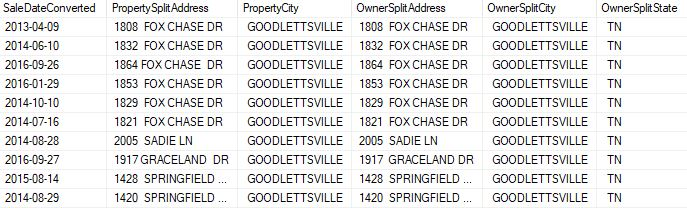
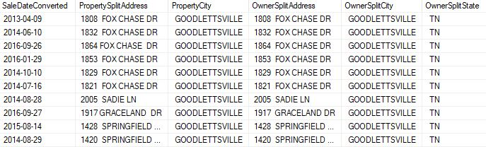

üîç Embarking on a Data Cleaning Odyssey in SQL: Nashville Housing Database
Nashville Housing Data: Sparkling Clean & Ready for Insights!

In this exciting venture, I delve into the realm of data cleaning, focusing on the vibrant dataset of Nashville Housing. The intricacies of this project unfold in SQL as we navigate through the nuances of cleaning and preparing the data for insightful analysis. If you're curious to explore the Nashville Housing database and embark on this cleaning journey with me, download the database here.
For a more in-depth look at the SQL code driving this data cleaning initiative, check out the full code on my GitHub. The pristine results of this data cleaning endeavor will lay the foundation for compelling visualizations, offering a clearer lens into the intricate dynamics of the Nashville housing landscape.
Embarking on the inaugural step of our data cleaning odyssey, I cast a wide net to survey the Nashville Housing database. Amidst this data sea, my focus sharpens as I identify columns that hold the potential for refinement—seeking clarity, coherence, and a user-friendly touch. This initial sweep sets the stage for a meticulous cleaning process, ensuring that each column not only aligns with the project's objectives but also resonates with clarity.
In this leg of our data cleaning journey, I honed in on the SaleDate column in the Nashville Housing dataset. Despite initial attempts to directly convert it into a standard date format, the process encountered unexpected complexities. Undeterred, I pivoted to an alternative approach, introducing a new column—SaleDateConverted. Despite the initial setbacks, success followed with the implementation of an ALTER TABLE command, seamlessly updating the SaleDateConverted column. This strategic move ensures that SaleDate data now aligns with the desired "YYYY-MM-DD" format, fostering clarity and coherence within the dataset.
As I continued my meticulous examination of the Nashville Housing dataset, a keen observation revealed instances of NULL values in the PropertyAddress column. A closer inspection uncovered that these NULL entries shared the same ParcelID as their well-defined counterparts. Armed with this insight, I crafted a strategic SQL code to seamlessly fill the gaps in PropertyAddress. By leveraging a JOIN operation within the same database, I synchronized data, ensuring that PropertyAddress now stands complete for each corresponding ParcelID. This proactive measure enhances the dataset's integrity, offering a more comprehensive and meaningful representation of Nashville housing details.
Navigating through the nuances of data refinement in the Nashville Housing dataset, attention turns to enhancing the structure of the PropertyAddress column. Recognizing the potential for more granular analysis, I embark on a transformative step to disentangle the address details and city information within PropertyAddress. This segregation not only brings a structured clarity to the PropertyAddress field but also lays the groundwork for future analyses, allowing seamless ordering based on the City column.
In the ongoing refinement of Nashville Housing data, I bring forth a meticulous transformation to enhance the OwnerAddress column. The first step involves a strategic code utilizing Parsename to unravel the intricacies of address specifics, creating a more organized representation of property details.
This journey continues with a seamless transition to the next phase—separating the city information within OwnerAddress.
Following this, the final touch involves a focused effort to extract state details, completing the trifecta of information—Address, City, and State—within the OwnerAddress column.

Delving further into the intricacies of the Nashville Housing dataset, attention turns to the SoldAsVacant column. Amidst the abundance of Yes and No entries, a subtle inconsistency surfaces with "Y" and "N" counterparts. In the pursuit of uniformity, a strategic code is employed to harmonize these labels, transforming "Y" to "Yes" and "N" to "No". This subtle yet impactful adjustment ensures a consistent and standardized representation, laying the groundwork for more seamless analyses.
In the pursuit of pristine data, the next act unfolds with a spotlight on the stage of de-duplication. Armed with a discerning eye, I've crafted a meticulous code to scrutinize duplicate rows within the Nashville Housing dataset. The criteria for this examination hinge on a holistic view—scanning for duplicates sharing the same ParcelID, PropertyAddress, SalePrice, SaleDate, and LegalReference.
In the ongoing quest for data purity, the spotlight shifts to the removal of duplicate rows within the Nashville Housing dataset. Armed with stringent criteria, including ParcelID, PropertyAddress, SalePrice, SaleDate, and LegalReference, a precise DELETE prompt is executed.
In the grand finale of our data cleaning spectacle, the curtain falls with a strategic move to declutter. Unwanted columns, including PropertyAddress, OwnerAddress, and the now-refined SaleDate, bid adieu through a concise DROP COLUMN command. This last touch ensures a sleek and purposeful Nashville Housing dataset, primed for the limelight of insightful analysis.
As we conclude this transformative journey through Nashville Housing data cleaning, my heartfelt thanks go out to you for staying engaged from start to finish. Your commitment to precision and clarity mirrors the essence of this data odyssey.
In your hands lies not just a post but a key to unlock nuanced insights. As a token of appreciation, here's a glimpse of the refined dataset, sculpted through cleaning efforts.
 

For the full immersive experience, showcasing the result of this Data Cleaning Project Portfolio, feel free to download it here. Your curiosity and commitment to data excellence inspire me, and I'm excited for the analytical possibilities that await. Until our paths cross again in the realm of data exploration‚Äîthank you for being part of this journey! üöÄüìä #DataCleaning #SQLProject #NashvilleHousing